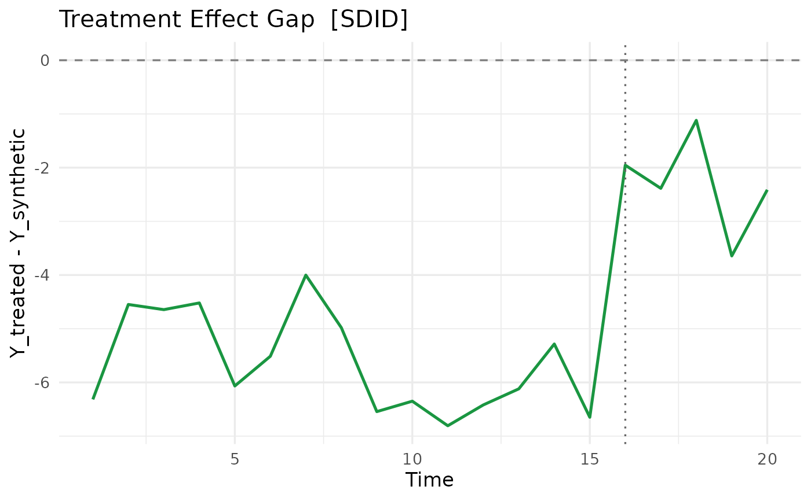

Unified formula interface for Synthetic Control and related causal inference methods. The formula syntax is:
Arguments
- formula
A
Formulaobject, e.g.y ~ D | unit + time.- data
A
data.framein long format (one row per unit-time).- method
One of
"scm","sdid","gsc","mc","tasc","si".- predictors
A
list()ofpred()specifications that define the predictor matrix for SCM (see Abadie et al. 2010, S.2.3). Eachpred()entry aggregates one or more variables over a time window. PassNULL(default) to use all pre-treatment outcome periods as predictors. Applies tomethod = "scm"only. Predictor rows are scaled by their standard deviation across all units before optimisation, matching the Synth reference implementation (ADH 2011, JSS); passscale_predictors = FALSEto disable.- covariates
An optional named
listof additional time-varying covariates to partial out before estimation. Each element is a character string naming a column indata. Supported formethod = "sdid","scm", and"gsc".- v_selection
V matrix selection method for
method = "scm"."insample"(default) follows Abadie et al. (2010): V is chosen by minimising in-sample pre-treatment MSPE."oos"follows Abadie (2021) S.3.2 / ADH (2015): the pre-treatment window is split into a training half and a validation half. In the default outcomes-as-predictors case, candidate W(V) are fitted on training-half outcomes only, V* minimises the validation-half MSPE, and the final W* is refit with V* on the outcomes of the lastfloor(T_pre/2)pre-treatment periods (sov_weightshasfloor(T_pre/2)entries). With user-suppliedpredictors, the predictor matrix is fixed and only the MSPE evaluation window is restricted to the validation half; lag yourpred()windows to the training period for a fully out-of-sample exercise.- donor_mspe_threshold
Donor pool filtering threshold (Abadie 2021 S.4). For
method = "scm"only. Each donor's individual pre-treatment MSPE (using that donor alone as the counterfactual) is divided by the minimum such MSPE across all donors. Donors whose ratio exceeds this threshold are excluded from estimation.Inf(default) disables filtering.- lambda_pen
Penalised SCM parameter (Abadie & L'Hour 2021, JASA). For
method = "scm"only.NULL(default) runs standard unpenalised SCM."auto"selects the penalty via out-of-sample pre-treatment MSPE on the same validation window asv_selection = "oos". A non-negative number uses that value directly.- v_optim
Outer V-optimisation method for
method = "scm"."coord_descent"(default) uses the existing C++ coordinate descent with 11-point grid search – fastest whenk = T_preis large (outcomes-only)."bfgs"uses R's L-BFGS-B, which requires only O(k^2) inner QP calls and is faster whenkis small (e.g. external predictors with k <= 15)."auto"selects"bfgs"whenk <= 15, otherwise"coord_descent".- ...
Additional arguments forwarded to the specific method (e.g.
r,lambda,zeta2).
Value
An object of classes c("coresynth_<method>", "coresynth").
All methods return at minimum:
method: estimator nameestimate: average treatment effect (ATT)times: time index vectorT_pre: number of pre-treatment periodsY_treat: treated unit outcome seriesgap: treatment effect series (Y_treat - counterfactual)
Examples
# Synthetic balanced panel: 10 units over 20 periods, unit 1 treated
# after period 15.
set.seed(1)
panel <- expand.grid(unit = 1:10, year = 1:20)
panel$treated <- as.integer(panel$unit == 1 & panel$year > 15)
panel$gdp <- panel$unit + 0.5 * panel$year +
rnorm(nrow(panel)) + 3 * panel$treated
fit <- scm_fit(gdp ~ treated | unit + year, data = panel, method = "sdid")
summary(fit)
#> === coresynth summary ===
#> Method : SDID
#> Periods : T_pre = 15 | T_post = 5
#> ATT estimate: 3.49975
#> Unit weights (non-zero donors):
#> 2 3 4 5 6 8 9 10
#> 0.0886 0.1557 0.0275 0.1072 0.0966 0.1351 0.1746 0.2147
# \donttest{
# Visualise the estimated gap (requires ggplot2)
plot(fit, type = "gap")

# }